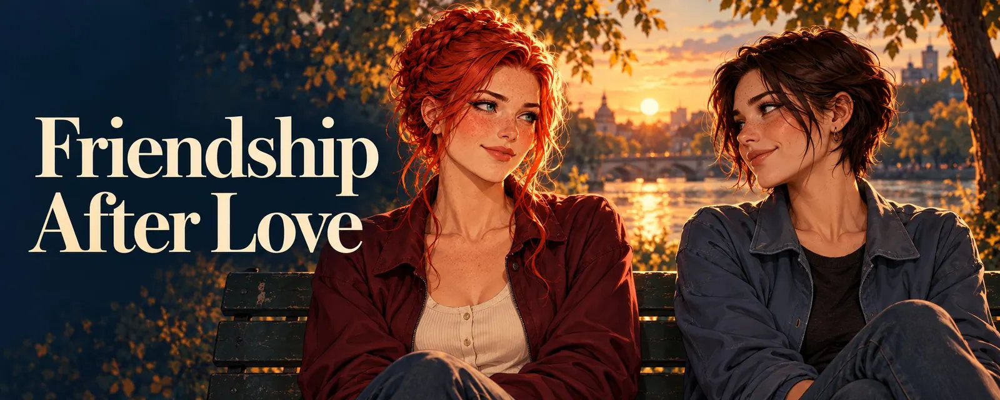

Friendship After Love
A folder, roughly a thousand pictures. Some I made, some were sent to me, some I just saved because in that moment I thought: I want to find this again.
The cursor hovers over "Delete". For quite a while. Long enough for the screensaver to kick in.
Then I close the folder again. The pictures stay where they are.
It never ends like this
Somewhere out there, supposedly, there are couples who sit down at a table and talk like this:
"Well, I feel our relationship has reached a point where it no longer works."
"Hey, I feel the same way. I think we shouldn't stand in each other's way. I love you too much for that. I don't want to stand in the way of your happiness."
"And I don't want to stand in the way of yours."
Then they both nod, put their mugs in the sink and walk off into the sunset as better people. I don't know a single couple where it went like that. I don't know anyone who knows one either. If they exist, they probably live in a novel, and even there the editor has scribbled in the margin: "Nobody will buy this." 😅
This is how it really ends: one side decides, the other is caught off guard. And the ground is pulled out from under the side that never saw it coming. Incomprehension, anger, maybe even hatred, disappointment. And grief, so much grief, even if the shock holds it back behind the door for a while. In the first moments you mostly want one thing: answers. Why. Since when. What could I have done differently.
Almost every relationship will end at some point, and the timing is never right. That's just how endings are. They don't knock, they don't ask whether now is a good time, and they never bring cake. Endings have never been particularly sensitive.
Two people, two shares
I'm not talking about relationships where one person broke the other. That's a different text. I'm talking about the ones where both loved and it still wasn't enough.
It always takes two to break up. Always. Both have their share in why it stopped working. One side was just more actively involved in the decision than the other.
But it also always takes two for it to become love in the first place. Both built it, both carried it. If only one had done something wrong, then only one would have carried anything. Then the love was one-sided. And it wasn't.
That sounds uncomfortable at first, especially for the side that was left. But there's something reconciling in it. When both realize that together they made it become love, and that both had their share in it ending, that's a basis. No perpetrator, no victim.
And only then is there an after. As long as one stays the villain, there's only prosecution and defense, and nobody ever gets out of the courtroom.
Where to put the person
When the shock fades and the grief begins, two questions come up. What went wrong? And: where do I put this person now?
The first drawer is called hatred. It's tempting, because it promises the pain will get easier. It won't. The only thing hatred reliably manages is to wipe out the memories. All the beautiful days, weeks, months and maybe years turn into rooms in your head you never want to enter again. As if you hadn't lived during that time at all. You burn down half the house because something sad happened in one room, and then wonder why there's a draft.
The second drawer is called forgetting. It sticks. Every person we meet changes us a little, and a person we were truly connected to leaves parts of themselves in us. You can't get those out again. Try it: think of a sentence, a moment with that one person that made you laugh.
Notice the corner of your mouth lifting? Exactly.
There's a third drawer. It doesn't have a particularly fancy name, it's simply called: keeping.
I don't want to see her as a stranger. I never wanted anything like that. We had a friendship, and that friendship turned into love. We had many beautiful days. Short, all added up, but they were beautiful days.
I know how it goes the other way round. Within a short time I had two relationships that simply dissolved, and both times I would have loved to stay friends. Both times I was turned away. Once I was told it was too much pressure. Once I was told nothing at all.
And then something strange happens. I don't forget that time, but it gets buried. Not because I want it to, but because the bitter ending settles over everything that came before, like dust on a photo nobody picks up anymore. The good days are still there. But every time I reach for them, the first thing I grab is the door that was shut.
That's the fourth drawer, and you don't choose it. You get pushed into it.
An argument at least still has two voices. Silence has only one, and it talks inside your own head.
That's exactly why this third drawer matters so much to me.
I want to be able to remember that time, maybe with a little wistfulness, but also with a smile. I don't want to sit in front of a thousand pictures wondering whether to delete them. I want to keep them.
And I want the friendship. What we had before we knew it would become more.
The wobbly time
The beginning is wobbly. You need to know that, otherwise you'll take the wobbling as a sign it can't work.
There are two people, both careful, for exactly opposite reasons. One side doesn't want to rekindle feelings. The other doesn't want to give the impression of wanting more. Both mean well. And because of it, both sometimes do too little.
Messages get rewritten three times before they go out. A joke that used to just be a joke suddenly gets checked for double meanings. And then there's that little heart at the end of the message. You used to just put it there without thinking, long before it turned romantic, by the way. Now you sit in front of it like in front of a bomb, not knowing whether to cut the red wire or the blue one. Is it too much? Will the other side read something into it? If I leave it out, will that seem cold? 🙈
That's normal. It's the scaffolding that stands around a friendship while it's being rebuilt. It isn't pretty, but it holds everything together until it's no longer needed.
Only, no wall grows behind scaffolding on its own. Someone has to lay the bricks. And what helps is surprisingly unspectacular.
Some need distance first, and that's no betrayal. Weeks without hearing from each other, until you can read the name on the screen without your stomach clenching. Others want to wish each other good morning and good night again after three days, because that's exactly what was missing. Both are right. There's no timetable that says you're too early or too late. Just two people noticing what's good for them.
Be honest, including about the pace. Whoever left has usually had longer to say goodbye on the inside, and is sometimes further along toward friendship than the other side can follow. If it's going too fast for you, you talk about it, and then you slow down. No hurt feelings, no drama. Patience here isn't waiting, it's consideration.
Say it once instead of tiptoeing around it forever. One honest sentence takes more pressure off than a hundred careful messages: "I want you in my life. As a friendship. No more, no less. And I'm scared I'll get it wrong." And then the other side gets to say what they're afraid of. Once both know what the other fears, nobody has to guess anymore. And a heart is just a heart again. If the other side says no, or not yet, that's their right. Friendship can be offered, not demanded.
Don't keep renegotiating the relationship. At some point the autopsy is done. Not every message has to settle what went wrong back then. Friendship also means talking about the movie, the coffee, the lousy day.
Go back to what was there before. The topics, the jokes, the things you did together before it turned romantic. Back then you teased each other too, poked fun, maybe flirted a little. Not all of it was pure romance. A flirt is just a flirt to begin with, and nothing has to come of it, just as not every ERP turns into a love story. None of that burned down with the rest. It still belongs to both of you.
So meet each other as naturally as you did back then. No obligation, without every heart having to mean something, and build a friendship from there.
And the hardest part: new people. At some point there's someone in the other side's life, and the place you once had is taken. Being happy about it comes later. At first it's enough not to work against it. No comparing, no pointed little remarks, no secretly keeping score. Jealousy is a terrible accountant, it counts everything twice and nothing right.
Why go to all this trouble? Because this friendship isn't like any other. Not romantic, but special. Here is a person who has seen you the way only a few do. With the quirks, the bad days and the silly laugh nobody else knows.
And remember, both of you, that you had a beautiful time together. That's not baggage you drag along. It's a foundation, and a friendship stands on it better than on most others. You don't throw something like that away. You rebuild it.
Second chances, and ice cream
I believe in second chances. And in third ones. I'm just a romantic who sits in front of a soppy love story with a very large tub of ice cream and still cries at the happy ending, even though she saw it coming since minute ten. 🍨
Just as circumstances can lead to a relationship ending, they can change again. And sometimes that turns into a new love. Both people's lives can change, and nobody knows in advance where to.
I've experienced it in real life. It can take weeks, months, sometimes years until two lifelines cross again.
Of course you shouldn't count on it. If you wait for it, you'll probably wait your whole life, and the ice cream melts eventually too. A friendship isn't a waiting room for a second chance. It's something of its own.
Offline there are at least opportunities. As long as nobody has moved away, you'll run into each other at some point. At the supermarket, at a party, through mutual friends, at the bus stop where you used to freeze together. Life has plenty of ways to put two people side by side again.
Online there's usually only one place everything hangs on: a platform. It's the hub, café, living room and front door all in one. And it never lasts. People move on, delete their profile or are simply gone. There's no supermarket where you bump into each other by chance. Let go of the thread completely, and you'll rarely find it again.
Just something to keep in the back of your mind.
Not a consolation prize
A friendship isn't what's left over when love has gone. It's not the consolation prize you get at the fairground stall when you didn't win the teddy bear. It was there before. It just waited in the next room for a while.
A friendship isn't a bad thing. It's actually a really good thing.
I liked and valued the woman I loved beyond the romance too. Because she's a wonderful person you can talk to about so many things. That hasn't changed. And it doesn't change just because something else has ended.
I leave the pictures where they are. I write a message about something we would have talked about for hours back then. Nothing big.
Add a heart.
Send. ❤️
First published on X. Replies and conversation live there.